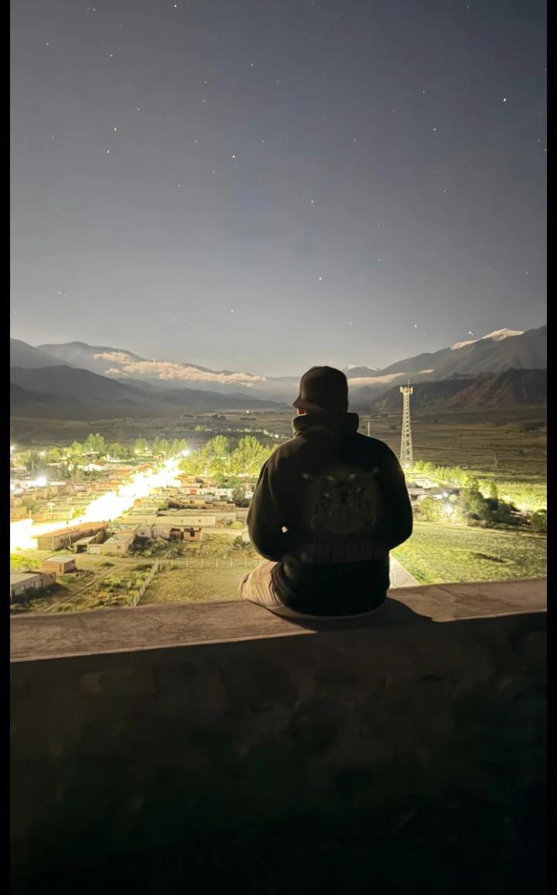

Individual
Este portafolio
Sitio de una sola página con mi presentación, proyectos, formación, servicios y contacto.
Rol: desarrollador (proyecto individual).
Tecnologías: HTML5, CSS3 y JavaScript.
Repositorio: Ver código
Demo: Ver sitio en vivo
Arapa Dillan Luigi Adolfo
Portafolio · 2026
Desarrollador Full-Stack & Barbero
Construyo sitios web funcionales y, a la par, acompaño a las personas con mi barbería.
Estudiante de la Tecnicatura Superior en Análisis de Sistemas y Desarrollo de Software (IES N°6001), con experiencia en desarrollo de aplicaciones web full-stack individuales y en equipo, gestión de un emprendimiento propio y atención al público. Busco oportunidades para seguir incorporando conocimientos y experiencia en entornos reales.
Soy de La Poma. Me formé como barbero en la Academia Fusion Total Studio y disfruto la atención al público. También gestioné un emprendimiento de compra y venta online durante 7 meses.

Individual
Sitio de una sola página con mi presentación, proyectos, formación, servicios y contacto.
Rol: desarrollador (proyecto individual).
Tecnologías: HTML5, CSS3 y JavaScript.
Repositorio: Ver código
Demo: Ver sitio en vivo
Individual
Sitio web para barbería desarrollado con PHP 8, JavaScript y Bootstrap a partir de un diseño en Figma. Incluye base de datos MySQL normalizada hasta 3FN, CRUD de servicios con PDO y consultas preparadas, login con roles, contraseñas cifradas con bcrypt, protección CSRF, sesión de 30 minutos y bloqueo tras 5 intentos fallidos.
Rol: desarrollador web full-stack.
Tecnologías: PHP 8, JavaScript, Bootstrap, MySQL y PDO.
Demo: Ver sitio en vivo
Repositorio: Ver código
Grupal · equipo de 3
Tienda web de impresión 3D con catálogo, carrito, checkout y panel de pedidos, desarrollada en equipo con React 19, TypeScript, FastAPI y PostgreSQL.
Rol: desarrollador full-stack en equipo.
Tecnologías: React 19, TypeScript, FastAPI y PostgreSQL.
Mi parte: participé en el desarrollo en equipo del catálogo, el carrito, el checkout y el panel de pedidos, y colaboré con Git mediante ramas, Pull Requests y revisión de código en el repositorio compartido.
Demo: Ver demo
Repositorio: Ver código
Independiente
Durante 7 meses (ene 2026 – jul 2026) gestioné ventas online: publicación y oferta de productos, pedidos a proveedores, precios, cobros, envíos y entregas.
Rol: emprendedor · gestión comercial y atención al cliente.
Tecnologías: no aplica (emprendimiento comercial).
Servicio de barbería, cortes clásicos y modernos.
Creación de sitios web diversos y funcionales utilizando HTML y CSS.
Cuidado y perfilado facial.
Mi sueño desde que empecé en el mundo de la barbería es tener mi barber studio DKBZA.